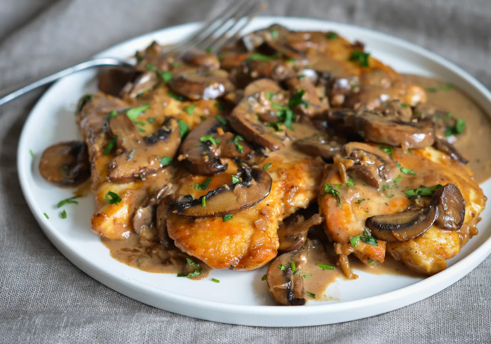

Chicken Marsala

Description
Chicken Marsala is an Italian-American dish of golden pan-fried chicken cutlets and mushrooms in a rich Marsala wine sauce.
The following recipe is from Once Upon A Chef, which is the top result when searching for Chicken Marsala recipes.
Ingredients (for 4 servings)
- 1 1/2 pounds boneless skinless chicken breasts, pounded 1/4-inch thick, or chicken tenderloins
- 3 tablespoons all-purpose flour
- Salt
- Freshly ground black pepper
- 1 tablespoon olive oil
- 3 tablespoons unsalted butter, divided
- 1 (8-oz) package pre-sliced bella or button mushrooms
- 3 tablespoons finely chopped shallots, from 1 medium shallot
- 2 cloves garlic, minced
- 2/3 cup chicken broth
- 2/3 cup dry Marsala wine
- 2/3 cup heavy cream
- 2 teaspoons chopped fresh thyme
- 2 tablespoons chopped fresh Italian parsley, for serving (optional)
Steps
- Place the flour, ¾ teaspoon salt, and ¼ teaspoon pepper in a ziplock bag. Add the chicken to the bag; seal bag tightly and shake to coat chicken evenly. Set aside.
- Heat the oil and 2 tablespoons of the butter in a large skillet over medium-high heat. (Use a stainless steel pan for the best browning. Nonstick will work too, but you won’t get that nice golden color on the chicken).
- Place the flour-dusted chicken in the pan, shaking off any excess first, and cook, turning once, until the chicken is golden and just barely cooked through, about 5 to 6 minutes total. Transfer the chicken to a plate and set aside.
- Melt the remaining tablespoon of butter in the pan. Add the mushrooms and cook, stirring frequently, until the mushrooms begin to brown, 3 to 4 minutes. Add the shallots, garlic, and ¼ teaspoon of salt; cook for 1 to 2 minutes more.
- Add the broth, Marsala, heavy cream, thyme, ¼ teaspoon salt, and ⅛ teaspoon of pepper; use a wooden spoon to scrape any brown bits from the pan into the liquid.
- Bring the liquid to a boil, then reduce the heat to medium and gently boil, uncovered, until the sauce is reduced by about half, slightly thickened, and darkened in color, 10 to 15 minutes (you’re going for a thin cream sauce; it won’t start to thicken until the very end of the cooking time).
- Add the chicken back to the pan, along with any juices that accumulated on the plate. Reduce the heat to low and simmer until the chicken is warmed through and the sauce thickens a bit more, 2 to 3 minutes. Sprinkle with parsley, if using, and serve.